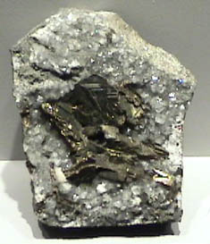

|

| CuFe2S3
This sample of cubanite is displayed in the Smithsonian Museum of Natural History. Cubanite is a sulfide mineral of copper and iron with the composition CuFe2S3. The sample is about 6x10 cm and is from Henderson mine #2, Chibougamah, Quebec, Canada.
|